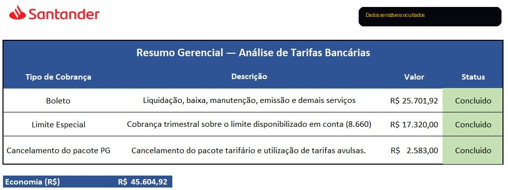
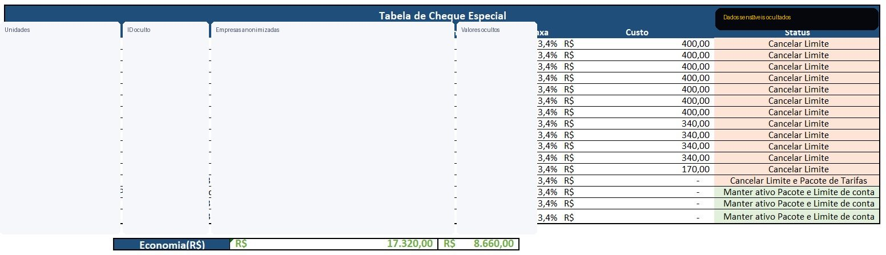
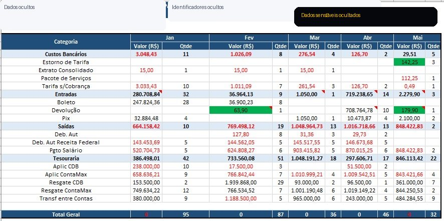
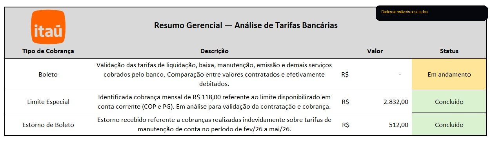
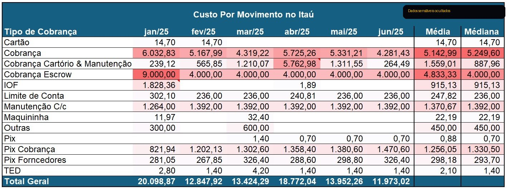
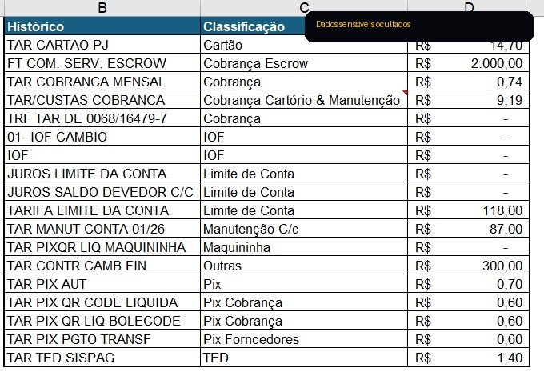
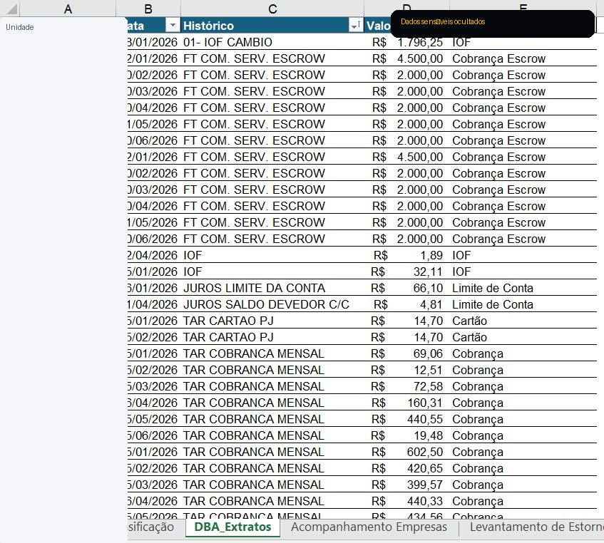

Em maio de 2026, o orçamento anual destinado às tarifas bancárias já apresentava um nível de consumo acima do esperado para o período. A ausência de um acompanhamento estruturado dificultava a identificação de cobranças indevidas e oportunidades de otimização.
← Voltar para HomeCase #01
Otimização de Custos Bancários por meio de Análise de Dados
Projeto desenvolvido para analisar tarifas bancárias, identificar cobranças indevidas e apoiar negociações com instituições financeiras, gerando impacto financeiro mensurável para a empresa.
R$ 38.872,92Impacto financeiro
R$ 12.659,00Economia
R$ 26.213,92Reembolsos
Desenvolver um processo estruturado para consolidar, classificar e analisar tarifas bancárias, identificando oportunidades de redução de custos, recuperação de valores e melhoria do controle financeiro.
Escopo
Dimensão do projeto
2Bancos analisados
16Empresas avaliadas
+6 mesesHistórico analisado
+20Categorias classificadas
ExcelFerramenta utilizada
Desenvolvimento
Como o projeto foi desenvolvido
ExtraçãoColeta dos dados
ConsolidaçãoBase única
ClassificaçãoCategorias
AnáliseDivergências
NegociaçãoEvidências
ResultadosImpacto
Evidências
Material analítico do projeto
Para preservar informações confidenciais, nomes de empresas, contas, agências e identificadores foram ocultados. As imagens mantêm a estrutura da análise, as categorias utilizadas e os resultados consolidados.
Banco Santander
Revisão de tarifas, limite especial e pacote bancário

Resumo executivo
Consolidação das principais oportunidades identificadas durante a análise das tarifas bancárias.

Análise de limite especial
Revisão de contas com limite disponibilizado para identificar oportunidades de cancelamento.

Base analítica
Estrutura mensal de categorias, quantidades e valores para acompanhamento das tarifas.
Banco Itaú
Classificação, custo por movimento e validação de cobranças

Resumo executivo
Síntese da análise realizada no Itaú, incluindo boletos, limite especial e estornos identificados.

Custo por movimento
Comparativo mensal por tipo de cobrança para apoiar a leitura dos principais custos.

Classificação das tarifas
Mapeamento do histórico bancário para uma classificação padronizada por serviço.

Base consolidada
Estruturação das movimentações com data, histórico, valor e classificação para análise recorrente.
Resultados
Resultados alcançados
R$ 12.659,00Economia
Redução de custos recorrentes por revisão de serviços e limites.
R$ 26.213,92Reembolsos
Recuperação de valores por cobranças indevidas e revisão de tarifas.
R$ 38.872,92Impacto financeiro
Soma entre economias recorrentes e valores recuperados.
Além da recuperação de valores e da redução de custos recorrentes, o projeto estabeleceu um processo contínuo de acompanhamento das tarifas bancárias, aumentando a visibilidade sobre os custos financeiros e apoiando futuras negociações com as instituições bancárias.
Este estudo de caso representa um projeto real desenvolvido no contexto profissional. Informações confidenciais foram anonimizadas para preservar a privacidade da empresa e de seus clientes.
Competências demonstradas
O que este projeto evidencia
Análise de Dados Financeiros
Estruturação de Bases
Análise de Custos
Comunicação Executiva
Negociação com Bancos
Melhoria de Processos
Próximos estudos de caso: Dashboard Financeiro, Automação Financeira, Power BI e SQL.